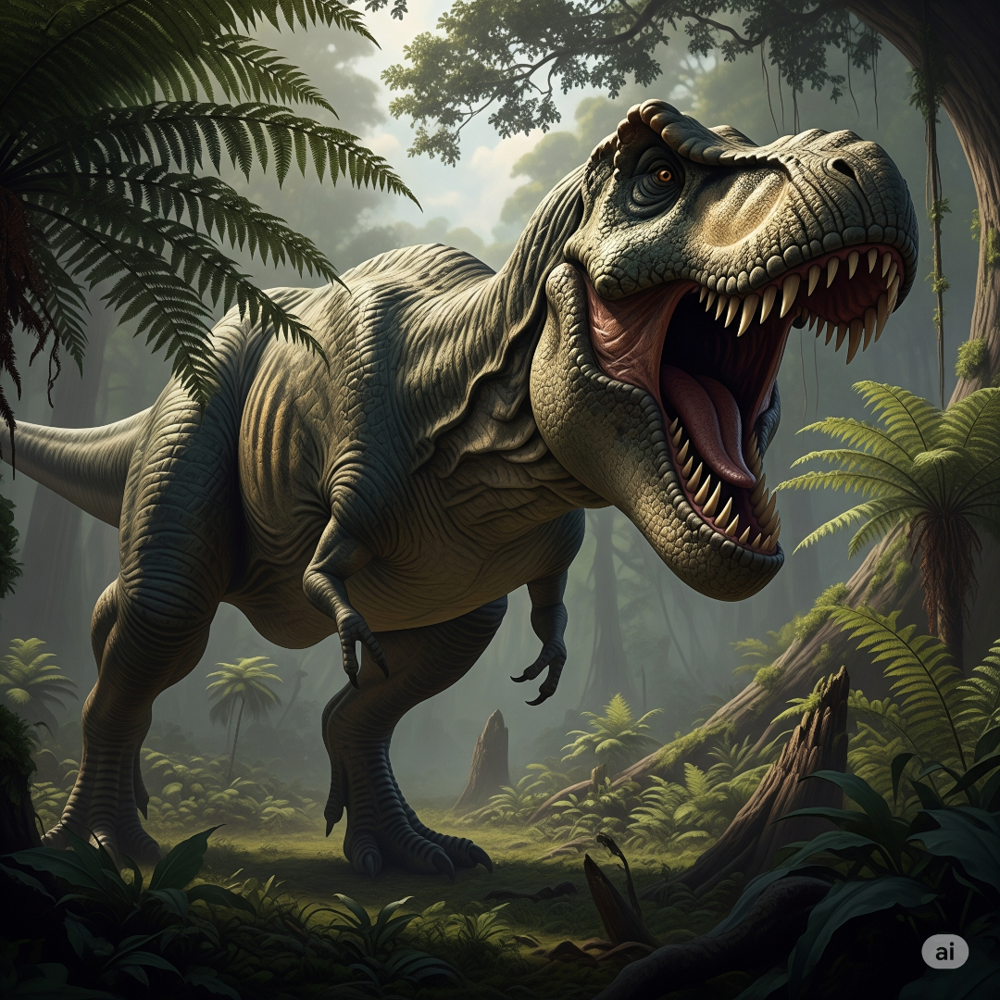

O Tiranossauro Rex, frequentemente abreviado como T. Rex, é sem dúvida um dos dinossauros mais famosos e temidos que já habitaram a Terra. Seu nome, que significa "lagarto tirano rei", reflete perfeitamente a sua posição no topo da cadeia alimentar durante o final do período Cretáceo. Vamos explorar alguns dos aspectos mais fascinantes desse gigante pré-histórico.
O Tiranossauro Rex viveu há aproximadamente 68 a 66 milhões de anos atrás, durante os últimos milhões de anos do período Cretáceo, pouco antes do evento de extinção em massa que aniquilou a maioria dos dinossauros. Seus fósseis foram encontrados principalmente na América do Norte, em áreas que hoje correspondem a estados como Montana, Wyoming e Dakota do Sul nos Estados Unidos, e Alberta e Saskatchewan no Canadá. Ele habitava ambientes variados, desde planícies costeiras a florestas exuberantes.
O T. Rex era uma máquina de matar incrivelmente adaptada. Ele podia atingir até 12 a 13 metros de comprimento e pesar entre 6 e 9 toneladas. Sua característica mais marcante era a cabeça maciça, que podia medir mais de 1,5 metros de comprimento, abrigando dentes serrilhados de até 30 centímetros de comprimento. Curiosamente, seus braços, embora pequenos em proporção ao corpo, eram musculosos e provavelmente usados para segurar presas ou ajudar a levantar o corpo do chão. Suas pernas traseiras, por outro lado, eram extremamente fortes e permitiam que ele se movesse com considerável velocidade, embora as estimativas variem sobre quão rápido ele realmente podia correr.
O Tiranossauro Rex continua a cativar a imaginação popular, sendo um ícone em filmes, livros e museus ao redor do mundo. Sua imagem de predador supremo garante seu lugar como um dos animais mais fascinantes da história da vida na Terra, e as pesquisas contínuas prometem revelar ainda mais segredos sobre esse magnífico dinossauro.